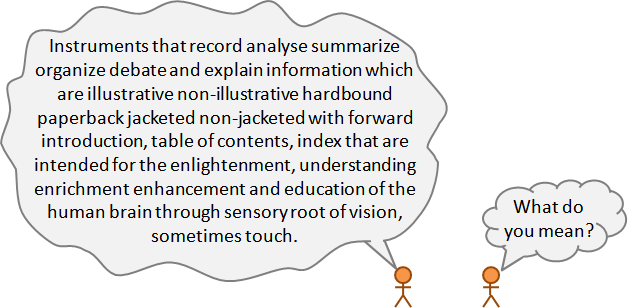
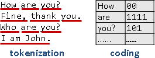
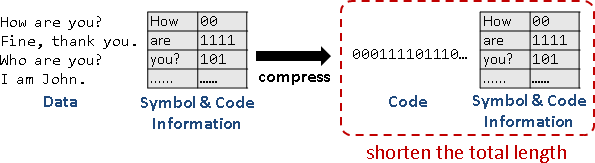

Compression
濃縮資料
如何簡明扼要的記載資料、傳述訊息呢？

縮短資料長度，減少交流時間，減少儲存空間，好處多多。
Compress / Decompress
「壓縮」是濃縮資料，「解壓縮」是回復資料。觀念類似先前提及的「編碼」與「解碼」。
compress
Thank you! -------------> 3Q!
<-------------
decompress
compress
200000000美金 -------------> 兩億鎂
<-------------
decompress
文字、聲音、圖像、動作、感受，通通可以壓縮。
資料先壓縮、再解壓縮，如果還是跟原本資料一模一樣，就叫做「無失真壓縮lossless compression」；如果不一樣就叫做「失真壓縮lossy compression」。
用電腦處理資料，首重精準無誤。以下僅介紹無失真壓縮。
二元碼壓縮
二元碼（二進位字串）縮短成另一個二元碼。
compress
001100111100101010100001 -------------> 10110101
<-------------
decompress
文字壓縮
例如Doctor縮寫成Dr.、公共汽車簡稱為公車。
vs. versus lol laugh out loudly RTFM read the fucking manual afaik as far as I known ¥ Japanese Yen
文字壓縮得視作二元碼壓縮！文字儲存於電腦當中，本質上就是ASCII或UTF-8二元碼。
語言壓縮
長話短說的壓縮，一般認為是文學的範疇。
原文 ｜壓縮 ｜失真壓縮｜言簡意賅 如果你沒勇氣陪我到｜若你畏懼陪我到｜不愛我 ｜再見 明天的明天的明天 ｜大後天 ｜ ｜ 倒不如就忘了就斷了｜不如忘盡 ｜就忘了我｜ 寂寞的昨天的昨天 ｜寂寞的前天 ｜ ｜
資訊壓縮
古代人將壓縮和編碼視為相同，一般認為是文字學的範疇。
資訊壓縮是把抽象的資訊信息變成實際的碼。設立一種編碼方式，讓碼的長度越短越好，以三言兩語詮釋大千世界。
打個比方，白話文是不太理想的壓縮、文言文是更理想的壓縮；北京話是不太理想的壓縮、山東話是更理想的壓縮。
北京話 ｜台灣話 ｜閩南話 ｜四川話 ｜山東話 甲：是誰在樓下啊？｜甲：誰在下面？｜甲：啥咪郎？｜甲：喇國？｜甲：誰？ 乙：是我在這兒唄！｜乙：我在這裡！｜乙：喜哇啦！｜乙：使握！｜乙：俺！ 甲：你在做什麼咧？｜甲：你在幹嘛？｜甲：衝啥悔？｜甲：昨傻？｜甲：啥？ 乙：我在這小便吶！｜乙：我在小便！｜乙：棒溜啦！｜乙：潦瞭！｜乙：尿！
除了文字可以當作碼，圖示、手語、表情也都可以當作碼。
Symbol / Code
資料通常很長。大家習慣逐段處理，符合電腦運作特性。
一段資料構成一個「符號」，再進一步變成簡短的「碼」。常見段落設定成符號，相同的符號對應相同的碼，有利於辨認。
制定符號：尚無最佳演算法，仍有研究空間。經典演算法是Lempel-Ziv Compression。
制定碼：已有最佳演算法，讓碼的總長度達到最小值！經典演算法是Arithmetic Compression、Huffman Compression。
兩者相互配合，產生了各式各樣的演算法：DEFLATE、gzip、bzip2、zopfli、brotli。有興趣的讀者請自行學習。
編碼與壓縮的差別：編碼時，符碼是公定的，符號長度是一個字元，碼長度是整數個byte；壓縮時，符碼是自訂的，長度不定。
【註：因為逐段處理，所以沒有活用到文字先後順序。】
何謂好的壓縮？
預先計算符碼，才能順利壓縮。符碼資訊，必須連同壓縮結果一併儲存，才能順利解壓縮。
所謂好的壓縮，就是讓「壓縮後長度」加「符碼資訊長度」少於「壓縮前長度」。
順帶一提，由於必須額外儲存符碼資訊，即便使用世上最好的壓縮演算法，檔案也可能越壓越大！比方說，已經壓縮過的資料再壓縮一遍，很容易產生這種情形。